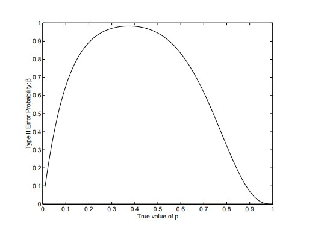
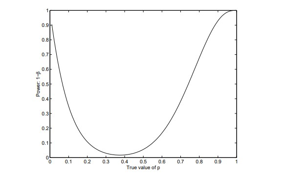
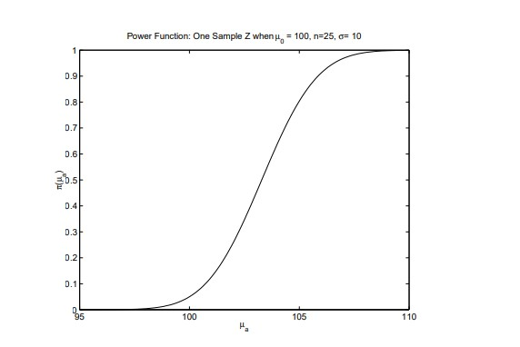
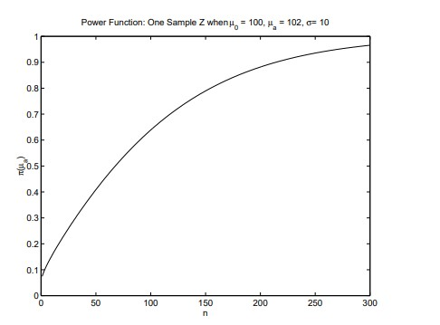

11 의사결정 규칙으로서의 검정
11.1 기각역과 오류
자료가 \(X_1, X_2, \ldots, X_n\)으로 구성되어 있다고 하자.
\(X\)의 결합 표본공간은 두 부분, 즉 기각역과 채택역으로 나뉜다.
실제로는 검정통계량을 사용하여 이 분할을 수행한다.
- 기각역: 검정통계량의 값 중 \(H_0\)를 기각하게 하는 값들의 집합.
- 채택역: 검정통계량의 값 중 \(H_0\)를 채택하게 하는 값들의 집합.
- 채택역은 기각역의 여집합이다.
오류
- 제1종 오류: 참인 \(H_0\)를 기각하는 오류.
- 제2종 오류: 거짓인 \(H_0\)를 채택하는 오류.
검정의 크기:
\[ \text{size} = \alpha = P(\text{reject } H_0 \mid H_0 \text{ true}) \]
- 제2종 오류 확률:
\[ P(\text{type II error}) = \beta = P(\text{accept } H_0 \mid H_0 \text{ false}) \]
- 검정력:
\[ \text{power} = 1 - \beta = P(\text{reject } H_0 \mid H_0 \text{ false}) \]
- 예: 크기 \(10\)의 확률표본이 \(Bern(p)\)에서 추출되었을 때, \(H_0: p = 0.4\) 대 \(H_a: p \ne 0.4\)의 검정을 생각하자.
- \(Y = \sum X_i\)라고 하자.
- 기각 규칙이 \(Y \le 0\) 또는 \(Y \ge 8\)이면 \(H_0\)를 기각하는 것이라면, 검정의 크기는 다음과 같다.
\[ \alpha = 1 - P(1 \le Y \le 7 \mid p = 0.4) = 0.0183 \]
- 제2종 오류 확률과 검정력은 \(H_0\)가 참이 아닐 때의 \(p\) 값에 따라 달라진다. 그 값은 다음과 같다.
\[ P(\text{type II error}) = P(1 \le Y \le 7 \mid p), \qquad \text{power} = 1 - P(1 \le Y \le 7 \mid p) \]
- 아래 두 그림은 여러 \(p\) 값에 대한 제2종 오류 확률과 검정력을 나타낸다.


11.2 검정력 함수
- \(X_1, X_2, \ldots, X_n\)이 \(f_X(x \mid \theta)\)에서 추출된 확률표본이라고 하자.
- \(\theta\)의 모수공간을 \(\Theta\)라 하고, \(\Theta_0\)와 \(\Theta_a\)를 \(\Theta\)의 서로소 부분공간이라고 하자.
- \(H_0: \theta \in \Theta_0\) 대 \(H_a: \theta \in \Theta_a\)의 검정을 고려한다.
- 검정력 함수는 \(\theta\)의 함수로서 다음과 같이 정의된다.
\[ \pi(\theta) = P(\text{reject } H_0 \mid \theta) \]
- 이 함수는 보통 \(\theta \in \Theta_a\)일 때 사용되지만, 정의 자체는 모든 \(\theta \in \Theta\)에 대해 가능하다.
- 예를 들어, 분산 \(\sigma^2\)이 알려진 정규분포 \(N(\mu, \sigma^2)\)에서 크기 \(n\)의 확률표본을 얻어 \(H_0: \mu = \mu_0\) 대 \(H_a: \mu > \mu_0\)를 검정한다고 하자.
- 표준정규분포의 \(100(1-\alpha)\) 백분위수를 \(\Phi^{-1}(1-\alpha)=z_{1-\alpha}\)라고 하자.
- 그러면 일표본 \(Z\) 검정은 다음의 \(Z\)에 대해 \(Z > z_{1-\alpha}\)이면 \(H_0\)를 기각한다.
\[ Z = \frac{\bar X - \mu_0}{\sigma/\sqrt{n}} \]
- 검정력 함수는 다음과 같다.
\[ \begin{align} \pi(\mu_a) &= P(Z > z_{1-\alpha} \mid \mu = \mu_a) \\ &= 1 - P\left[\frac{\bar X - \mu_0}{\sigma/\sqrt{n}} \le z_{1-\alpha} \mid \mu = \mu_a\right] \\ &= 1 - P\left[\frac{\bar X - \mu_a + \mu_a - \mu_0}{\sigma/\sqrt{n}} \le z_{1-\alpha} \mid \mu = \mu_a\right] \\ &= 1 - P\left[\frac{\bar X - \mu_a}{\sigma/\sqrt{n}} \le z_{1-\alpha} - \frac{\mu_a - \mu_0}{\sigma/\sqrt{n}} \mid \mu = \mu_a\right] \\ &= 1 - \Phi\left[z_{1-\alpha} - \frac{\mu_a - \mu_0}{\sigma/\sqrt{n}}\right]. \end{align} \]
- 예시로 \(\sigma=10\), \(\mu_0=100\), \(n=25\), \(\alpha=0.05\)이면 검정력 함수는 다음과 같다.
\[ \pi(\mu_a) = 1 - \Phi\left[1.645 - \frac{\mu_a - 100}{2}\right] \]
- 이 함수는 여러 \(\mu_a\) 값에 대해 아래에 표시되어 있다.

11.3 표본크기 선택
- 연구자는 의미 있는 차이를 탐지하기에 충분한 검정력을 갖도록 연구를 설계하고자 할 수 있다.
- 앞 절의 검정력 함수를 생각하자.
- 연구자가 중요하다고 보는 최소 차이를 2점으로 정했다고 하자.
- 즉, \(\mu_a \ge 102\)이면 연구자는 \(H_0\)를 기각하기를 원한다.
- \(\mu_a = 102\)로 고정하면, \(n\)의 함수로서 검정력은 다음과 같다.
\[ \pi(\mu_a) = 1 - \Phi\left[1.645 - \frac{102-100}{10/\sqrt{n}}\right] = 1 - \Phi\left[1.645 - \frac{\sqrt{n}}{5}\right] \]
- 이 함수는 여러 \(n\) 값에 대해 아래 그림에 표시되어 있다.

연구자가 특정 검정력이 필요하다고 결정했다면, 위 그림에서 필요한 표본크기를 읽을 수 있다.
일반적으로 \(H_0: \mu = \mu_0\) 대 \(H_a: \mu > \mu_0\)에 대한 일표본 \(Z\) 검정의 필요 표본크기는 검정력 함수를 원하는 값 \(1-\beta\)와 같게 두고 \(n\)에 대해 풀어 얻을 수 있다.
표준정규분포의 \(100\beta\) 백분위수를 \(\Phi^{-1}(\beta)=z_\beta\)라고 하자. 즉,
\[ \begin{align} \pi(\mu_a) &= 1 - \Phi\left[z_{1-\alpha} - \frac{\mu_a - \mu_0}{\sigma/\sqrt{n}}\right] = 1 - \beta \\ &\Longleftrightarrow \Phi\left[z_{1-\alpha} - \frac{\mu_a - \mu_0}{\sigma/\sqrt{n}}\right] = \beta \\ &\Longleftrightarrow z_{1-\alpha} - \frac{\mu_a - \mu_0}{\sigma/\sqrt{n}} = \Phi^{-1}(\beta) = z_\beta \\ &\Longleftrightarrow n = \frac{\sigma^2(z_{1-\alpha} - z_\beta)^2}{(\mu_a - \mu_0)^2}. \end{align} \]
- 예를 들어 \(\mu_0=100\), \(\mu_a=102\), \(\alpha=0.05\), \(\beta=0.10\), \(\sigma=10\)이면,
\[ n = \frac{100(1.645+1.282)^2}{(102-100)^2}=214.18 \]
- 따라서 \(n=215\)의 표본크기가 필요하다.
11.4 최강력 검정
단순가설: 단순가설은 자료의 결합분포를 완전히 지정하는 가설이다.
- 즉, 단순가설 아래에는 미지의 모수가 없다.
- 예를 들어 \(H_0: Y \sim Bin(25, \frac{1}{3})\)는 단순가설이다.
- 이 절에서는 단순 \(H_0\) 대 단순 \(H_a\)의 검정을 살펴본다.
최강력 검정: 단순 \(H_0\) 대 단순 \(H_a\)의 검정에서, 크기가 \(\alpha\)인 검정 중 크기 \(\le \alpha\)인 어떤 다른 검정보다 검정력이 작지 않으면 그 검정을 크기 \(\alpha\)의 최강력 검정이라고 한다.
Neyman-Pearson 보조정리: \(H_0: X \sim f_0(x)\) 대 \(H_a: X \sim f_1(x)\)를 고려하자. 여기서 \(f_0\)와 \(f_1\)은 각각 \(H_0\)와 \(H_a\) 아래의 결합 pdf 또는 pmf이다.
- 이때 최강력 검정은 다음을 만족할 때 \(H_0\)를 기각하는 것이다.
\[ \Lambda(x) < K, \qquad \text{where} \qquad \Lambda(x)=\frac{f_0(x)}{f_1(x)} \]
여기서 \(\Lambda(x)\)는 우도비이다.
- 또한 검정의 크기는 다음과 같다.
\[ \alpha^* = \int_{R^*} f_0(x)\,dx \le \alpha \]
그리고
\[ (1-\beta) - (1-\beta^*) = \beta^* - \beta = \int_R f_1(x)\,dx - \int_{R^*} f_1(x)\,dx \]
- 위 차이가 0 이상임을 보이자.
- \(R = (R \cap R^*) \cup (R \cap R^{*c})\)이고, \((R \cap R^*)\)와 \((R \cap R^{*c})\)는 서로소이다.
- 마찬가지로 \(R^*=(R^*\cap R)\cup(R^*\cap R^c)\)이고 두 집합은 서로소이다.
- 따라서 다음이 성립한다.
\[ \begin{align} \int_R f_1(x)\,dx &= \int_{R\cap R^*} f_1(x)\,dx + \int_{R\cap R^{*c}} f_1(x)\,dx, \\ \int_{R^*} f_1(x)\,dx &= \int_{R^*\cap R^c} f_1(x)\,dx + \int_{R^*\cap R} f_1(x)\,dx, \\ \beta^* - \beta &= \int_{R\cap R^{*c}} f_1(x)\,dx - \int_{R^*\cap R^c} f_1(x)\,dx. \end{align} \]
- \(R \cap R^{*c}\)에서는 \(f_1(x) > K^{-1}f_0(x)\)이고, \(R^*\cap R^c\)에서는 \(f_1(x) < K^{-1}f_0(x)\)이다.
- 따라서,
\[ \begin{align} \beta^* - \beta &\ge \frac{1}{K}\int_{R\cap R^{*c}} f_0(x)\,dx - \frac{1}{K}\int_{R^*\cap R^c} f_0(x)\,dx \\ &= \frac{1}{K}\int_R f_0(x)\,dx - \frac{1}{K}\int_{R^*} f_0(x)\,dx \\ &= \frac{1}{K}(\alpha - \alpha^*) \ge 0. \end{align} \]
이는 경쟁 검정의 크기가 \(\alpha^* \le \alpha\)이기 때문이다.
- 예: \(X_1, X_2, \ldots, X_n\)이 \(NegBin(k, \theta)\)에서 추출된 확률표본이고 \(k\)는 알려져 있다고 하자.
- \(\theta_a > \theta_0\)일 때 \(H_0: \theta=\theta_0\) 대 \(H_a: \theta=\theta_a\)의 최강력 검정을 구하라.
- 풀이: 우도비 검정통계량은 다음과 같다.
\[ \begin{align} \Lambda(x) &= \frac{\prod_{i=1}^{n}\binom{x_i-1}{k-1}\theta_0^k(1-\theta_0)^{x_i-k}} {\prod_{i=1}^{n}\binom{x_i-1}{k-1}\theta_a^k(1-\theta_a)^{x_i-k}} \\ &= \frac{\theta_0^{nk}(1-\theta_0)^{n(\bar x-k)}} {\theta_a^{nk}(1-\theta_a)^{n(\bar x-k)}} \\ &= \left(\frac{\theta_0(1-\theta_a)}{\theta_a(1-\theta_0)}\right)^{nk} \left(\frac{1-\theta_0}{1-\theta_a}\right)^{-n(\bar x-k)}. \end{align} \]
- 우도비 검정통계량은 자료에 대해 오직 \(\bar x\)를 통해서만 의존하며,
\[ \theta_a > \theta_0 \Longrightarrow \frac{1-\theta_0}{1-\theta_a} > 1 \]
이다.
따라서 \(\Lambda(x)\)는 \(\bar x\)의 증가함수이다.
작은 \(\Lambda(x)\) 값에서 \(H_0\)를 기각하는 것은 작은 \(\bar x\) 값에서 \(H_0\)를 기각하는 것과 동치이다. 그러므로 최강력 검정은 다음 관계로 결정되는 \(K^*\)에 대해 \(\bar x < K^*\)이면 \(H_0\)를 기각하는 것이다.
\[ P(\bar X < K^* \mid \theta = \theta_0) \le \alpha. \]
- 위 확률은 크게 어렵지 않게 계산할 수 있다. \(H_0\) 아래에서
\[ n\bar X = \sum_{i=1}^{n} X_i \sim NegBin(nk, \theta_0) \]
이다.
11.5 균일최강력 검정
- \(f_X(x\mid\theta)\)에서 추출된 크기 \(n\)의 확률표본을 바탕으로 \(H_0: \theta=\theta_0\) 대 \(H_a: \theta>\theta_0\)를 검정하는 문제를 고려하자.
균일최강력(UMP) 검정
정의: \(H_0: \theta=\theta_0\) 대 \(H_a: \theta=\theta_a\)의 검정이 모든 \(\theta_a>\theta_0\)에 대해, 크기 \(\le \alpha\)인 모든 검정 중 최강력 검정이면, 그 검정은 \(H_0: \theta=\theta_0\) 대 \(H_a: \theta>\theta_0\)에 대한 균일최강력 검정이다.
UMP 검정을 찾는 방법
- 먼저 Neyman-Pearson 보조정리를 사용하여 어떤 \(\theta_a>\theta_0\)에 대한 \(H_0: \theta=\theta_0\) 대 \(H_a: \theta=\theta_a\)의 최강력 검정을 찾는다.
- 검정의 형태가 모든 \(\theta_a\)에 대해 동일하다면, 그 검정은 UMP이다.
예: \(X_1, X_2, \ldots, X_n\)이 \(NegBin(k, \theta)\)에서 추출된 확률표본이고 \(k\)는 알려져 있다고 하자.
- \(H_0: \theta=\theta_0\) 대 \(H_a: \theta>\theta_0\)의 UMP 검정을 구하라.
- 풀이: \(\theta_a>\theta_0\)일 때 \(H_0: \theta=\theta_0\) 대 \(H_a: \theta=\theta_a\)의 최강력 검정은 다음 관계로 결정되는 \(K^*\)에 대해 \(\bar x < K^*\)이면 \(H_0\)를 기각하는 것이다.
\[ P(\bar X < K^* \mid \theta = \theta_0) \le \alpha. \]
이 검정의 형태는 특정한 \(\theta_a\) 값에 의존하지 않는다.
- 따라서 작은 \(\bar x\) 값에서 \(H_0\)를 기각하는 검정은 \(H_0: \theta=\theta_0\) 대 \(H_a: \theta>\theta_0\)의 UMP 검정이다.
유사한 논리로, 음이항분포 예제에서 \(H_0: \theta=\theta_0\) 대 \(H_a: \theta<\theta_0\)의 UMP 검정은 큰 \(\bar x\) 값에서 \(H_0\)를 기각하는 것이다.
UMP 개념은 \(H_0: \theta \le \theta_0\) 대 \(H_a: \theta>\theta_0\)의 검정으로 확장될 수 있다.
- 검정력 함수가 \(\theta\)에 대해 단조이면, \(H_0: \theta=\theta_0\) 대 \(H_a: \theta>\theta_0\)의 UMP 검정은 \(H_0: \theta \le \theta_0\) 대 \(H_a: \theta>\theta_0\)의 검정에도 UMP이다.
- 검정의 크기는 다음과 같다.
\[ \alpha = \sup_{\theta \le \theta_0} P(\text{reject } H_0 \mid \theta) = \sup_{\theta \le \theta_0} \pi(\theta) = P(\text{reject } H_0 \mid \theta_0) \]
이는 검정력 함수가 단조이기 때문이다.
- \(X\)의 분포가 일모수 지수족에 속하면 검정력 함수가 \(\theta\)에 대해 단조임을 보일 수 있다.
11.6 우도비 검정
- \(H_0: \theta \in \Theta_0\) 대 \(H_a: \theta \in \Theta_a\)의 검정을 고려하자. 여기서 \(\Theta_0\)와 \(\Theta_a\)는 모수공간의 서로소 부분공간이다.
- 모수 \(\theta\)는 벡터일 수도 있다.
- \(H_0\) 대 \(H_a\)에 대한 일반화 우도비 검정은 우도비 검정통계량의 작은 값에서 \(H_0\)를 기각하는 것이다.
\[ \Lambda(X)=\frac{L(\hat\theta_0\mid X)}{L(\hat\theta_a\mid X)} \]
여기서
\[ L(\hat\theta_0\mid X)=\sup_{\theta\in\Theta_0}L(\theta\mid X), \qquad L(\hat\theta_a\mid X)=\sup_{\theta\in\Theta_0\cup\Theta_a}L(\theta\mid X). \]
- 즉, 우도함수는 두 번 최대화된다.
- 첫 번째는 귀무가설 아래에서,
- 두 번째는 귀무가설과 대립가설의 합집합 아래에서이다.
- \(\Lambda(X)\)의 성질
- \(\Lambda(X) \in [0,1]\).
- 작은 \(\Lambda\) 값은 \(H_0\)에 반하는 증거이다.
- 완만한 정칙조건 아래에서 \(-2\ln[\Lambda(X)]\)의 점근적 귀무분포는 \(\chi^2\) 분포이며, 자유도는 \(H_0\) 아래의 제약 수에서 \(H_a\) 아래의 제약 수를 뺀 값이다.
- 의사결정 규칙은 \(-2\ln(\Lambda)\)가 클 때 \(H_0\)를 기각하는 것이다.
- 예제 1: \(j=1,\ldots,n_i\)에 대해 \(X_{ij}\overset{ind}{\sim} Bern(p_i)\)라고 하자.
- 즉, 두 베르누이 모집단에서 각각 독립표본을 얻은 것이다.
- \(H_0: p_1=p_2\) 대 \(H_a: p_1\ne p_2\)의 검정을 고려한다.
- 충분통계량은 \(Y_1=\sum_{j=1}^{n_1}X_{1j}\)와 \(Y_2=\sum_{j=1}^{n_2}X_{2j}\)이다.
- 이 통계량들은 독립이며 \(Y_i\sim Bin(n_i,p_i)\)를 따른다.
- 우도함수는 다음과 같다.
\[ L(p_1,p_2\mid y_1,y_2)=p_1^{y_1}(1-p_1)^{n_1-y_1}p_2^{y_2}(1-p_2)^{n_2-y_2} \]
\(H_0\) 아래에서 공통값 \(p=p_1=p_2\)의 MLE는 \(\hat p=(y_1+y_2)/(n_1+n_2)\)이다.
\(H_0\cup H_a\) 아래에서는 \(p_1\)과 \(p_2\)에 제약이 없으므로 MLE는 \(\hat p_1=y_1/n_1\), \(\hat p_2=y_2/n_2\)이다.
- 우도비 검정통계량은 다음과 같다.
\[ \Lambda(y_1,y_2)= \frac{\hat p^{y_1+y_2}(1-\hat p)^{n_1+n_2-y_1-y_2}} {\hat p_1^{y_1}(1-\hat p_1)^{n_1-y_1}\hat p_2^{y_2}(1-\hat p_2)^{n_2-y_2}} \]
- \(H_0\)가 참이고 표본크기가 크면, \(-2\ln[\Lambda(Y_1,Y_2)]\)는 근사적으로 \(\chi^2\) 확률변수를 따른다.
- \(H_a\) 아래에는 제약이 없고 \(H_0\) 아래에는 제약이 하나이므로 \(\chi^2\) 확률변수의 자유도는 1이다.
- 예를 들어 \(n_1=30\), \(n_2=40\), \(y_1=20\), \(y_2=35\)이면 \(\Lambda(y_1,y_2)=0.1103\), \(-2\ln(\Lambda)=4.4087\), \(p\)-값은 \(0.0358\)이다.
- 비교를 위해 익숙한 대규모 표본 검정통계량은 다음과 같다.
\[ z=\frac{\hat p_1-\hat p_2}{\sqrt{\hat p(1-\hat p)\left(\frac{1}{n_1}+\frac{1}{n_2}\right)}}=2.1022 \]
그리고 \(p\)-값은 \(0.0355\)이다.
\(Z^2\sim\chi^2_1\)이고 \(z^2=4.4192\)로, LR 검정통계량과 매우 가깝다.
예제 2: 분산을 모르는 정규분포에서 표본을 추출할 때, \(H_0:\mu=\mu_0\) 대 \(H_a:\mu\ne\mu_0\)에 대한 일반적인 일표본 \(t\)-검정은 우도비 검정이다.
- 아래는 그 증명의 또 다른 형태이다.
보조정리: \(a\)가 \(\sigma^2\)에 의존하지 않는 상수 또는 변수이고, \(n\)이 양의 상수라고 하자. 그러면
\[ h(\sigma^2;a)=\frac{e^{-\frac{1}{2\sigma^2}a}}{(\sigma^2)^{n/2}} \]
을 \(\sigma^2\)에 대해 최대화하는 값은 다음과 같다.
\[ \hat\sigma^2=\frac{a}{n}. \]
- 또한,
\[ \max_{\sigma^2}h(\sigma^2;a)=h\left(\frac{a}{n},a\right) =\frac{e^{-n/2}}{(a/n)^{n/2}} \]
이다.
- 증명: \(h\)의 자연로그는 다음과 같다.
\[ \ln(h)=-\frac{a}{2\sigma^2}-\frac{n}{2}\ln(\sigma^2). \]
- \(\ln(h)\)의 1차 도함수를 0으로 두고 \(\sigma^2\)에 대해 풀면,
\[ \begin{align} \frac{\partial}{\partial\sigma^2}\ln(h) &=\frac{a}{2\sigma^4}-\frac{n}{2\sigma^2}, \\ \frac{\partial}{\partial\sigma^2}\ln(h)=0 &\Longrightarrow \frac{a}{\sigma^2}-n=0 \\ &\Longrightarrow \sigma^2=\frac{a}{n}. \end{align} \]
- 이 해가 최대값을 주는 이유는 \(\sigma^2=a/n\)에서 평가한 \(\ln(h)\)의 2차 도함수가 음수이기 때문이다.
\[ \begin{align} \frac{\partial^2}{(\partial\sigma^2)^2}\ln(h) &= -\frac{a}{\sigma^6}+\frac{n}{2\sigma^4}, \\ \left.\frac{\partial^2}{(\partial\sigma^2)^2}\ln(h)\right|_{\sigma^2=a/n} &= -\frac{n^3}{2a^2}<0. \end{align} \]
최대값을 얻으려면 \(h(\sigma^2,a)\)에 \(a/n\)을 대입하면 된다.
정리: 분산을 모르는 정규분포에서 크기 \(n\)의 확률표본을 바탕으로 \(H_0:\mu=\mu_0\) 대 \(H_a:\mu\ne\mu_0\)를 검정하는 일반화 우도비 검정은 다음의 \(T\)에 대해 큰 \(|T|\)에서 \(H_0\)를 기각하는 것이다.
\[ \begin{align} T &= \frac{\sqrt{n}(\bar X-\mu_0)}{S_X}, \\ \bar X &= \frac{1}{n}\sum_{i=1}^{n}X_i, \qquad S_X^2 = \frac{1}{n-1}\sum_{i=1}^{n}(X_i-\bar X)^2. \end{align} \]
- 증명: \(i=1,\ldots,n\)에 대해 \(X_i\overset{iid}{\sim}N(\mu,\sigma^2)\)일 때, \(\mu\)와 \(\sigma^2\)의 우도함수는 다음과 같다.
\[ L(\mu,\sigma^2\mid X)= \frac{\exp\left\{-\frac{1}{2\sigma^2}\sum_{i=1}^{n}(X_i-\mu)^2\right\}} {(\sigma^2)^{n/2}(2\pi)^{n/2}}. \]
- \(H_0:\mu=\mu_0\) 아래에서 우도함수는 다음과 같다.
\[ L(\mu_0,\sigma^2\mid X)= \frac{\exp\left\{-\frac{1}{2\sigma^2}\sum_{i=1}^{n}(X_i-\mu_0)^2\right\}} {(\sigma^2)^{n/2}(2\pi)^{n/2}}. \]
보조정리에서
\[ a=\sum_{i=1}^{n}(X_i-\mu_0)^2 \]
로 두면 다음을 얻는다.
\[ \begin{align} \hat\sigma_0^2 &= \frac{1}{n}\sum_{i=1}^{n}(X_i-\mu_0)^2, \\ \max_{\sigma^2}L(\mu_0,\sigma^2\mid X) &= \frac{e^{-n/2}} {\left(\frac{1}{n}\sum_{i=1}^{n}(X_i-\mu_0)^2\right)^{n/2}(2\pi)^{n/2}}. \end{align} \]
- \(H_0\cup H_a\) 아래에서는 우도함수를 \(\mu\)와 \(\sigma^2\)에 대해 최대화해야 한다.
- \(L\)의 분자에 있는 지수의 부호가 음수임에 주목하자.
- 따라서 \(\mu\)에 대해 \(L\)을 최대화하려면 다음을 최소화해야 한다.
\[ \sum_{i=1}^{n}(X_i-\mu)^2 \]
- 평행축 정리에 의해 이를 최소화하는 값은 \(\mu=\bar X\)임이 알려져 있다.
- 우도함수에 \(\bar X\)를 \(\mu\) 대신 대입하고 보조정리에서
\[ a=\sum_{i=1}^{n}(X_i-\bar X)^2 \]
로 두면 다음을 얻는다.
\[ \begin{align} \hat\sigma_a^2 &= \frac{1}{n}\sum_{i=1}^{n}(X_i-\bar X)^2, \\ \max_{\sigma^2,\mu}L(\mu,\sigma^2\mid X) &= \frac{e^{-n/2}} {\left(\frac{1}{n}\sum_{i=1}^{n}(X_i-\bar X)^2\right)^{n/2}(2\pi)^{n/2}}. \end{align} \]
- 우도비 검정통계량은 다음과 같다.
\[ \Lambda= \frac{L(\mu_0,\hat\sigma_0^2)}{L(\bar X,\hat\sigma_a^2)} =\left(\frac{\sum_{i=1}^{n}(X_i-\bar X)^2} {\sum_{i=1}^{n}(X_i-\mu_0)^2}\right)^{n/2}. \]
- 평행축 정리로부터 다음을 상기하자.
\[ \sum_{i=1}^{n}(X_i-\mu_0)^2 =\sum_{i=1}^{n}(X_i-\bar X)^2+n(\bar X-\mu_0)^2. \]
- 따라서 우도비 검정(LRT)은 다음의 작은 \(\Lambda\)에서 \(H_0\)를 기각하는 것이다.
\[ \Lambda= \left(\frac{\sum_{i=1}^{n}(X_i-\bar X)^2} {\sum_{i=1}^{n}(X_i-\bar X)^2+n(\bar X-\mu_0)^2}\right)^{n/2} \]
- \(\Lambda\)의 단조변환도 LRT 통계량으로 사용할 수 있다. 특히,
\[ (\Lambda^{-2/n}-1)(n-1) =\frac{n(\bar X-\mu_0)^2}{S_X^2}=T^2 \]
는 \(\Lambda\)의 감소함수이다.
- 따라서 LRT는 큰 \(T^2\)에서, 또는 동치로 큰 \(|T|\)에서 \(H_0\)를 기각한다.
11.7 베이지안 검정
베이즈 검정을 만들기 위해 먼저 다음을 정의한다.
손실함수: \(l(\theta, act)\)는 자연상태가 \(\theta\)일 때 행동 \(act\)를 수행함으로써 발생하는 손실이다.
- 행동 \(act\)는 “\(H_0\) 기각” 또는 “\(H_0\) 채택” 중 하나이다.
- 예를 들어 \((H_0, \text{reject }H_0)\)는 참인 \(H_0\)를 기각할 때 발생하는 손실이다.
- 올바른 행동을 하면 손실이 없다고 가정한다.
모수공간: \(H_0\) 아래에서의 \(\theta\)의 지지집합을 \(\Theta_0\), \(H_a\) 아래에서의 지지집합을 \(\Theta_a\)라고 한다.
- 예를 들어 가설이 \(H_0:\mu\le100\) 및 \(H_a:\mu>100\)이면, \(\Theta_0=(-\infty,100]\), \(\Theta_a=(100,\infty)\)이다.
사전분포: 새 자료가 수집되기 전 \(\theta\)의 사전 pdf 또는 pmf를 \(g(\theta)\)라고 한다.
사후분포: 새 자료가 수집된 후 \(\theta\)의 사후 pdf 또는 pmf를 \(g(\theta\mid X)\)라고 한다.
베이즈 손실: 행동 \(act\)에 대한 사후 베이즈 손실은 다음과 같다.
\[ B(act\mid X)=E_\theta[l(\theta,act)\mid X] \]
특히 올바른 결정의 손실이 0이면,
\[ \begin{align} B(\text{reject }H_0\mid X) &=\int_{\Theta_0} l(\theta,\text{reject }H_0)g(\theta\mid X)\,d\theta, \\ B(\text{accept }H_0\mid X) &=\int_{\Theta_a} l(\theta,\text{accept }H_0)g(\theta\mid X)\,d\theta. \end{align} \]
베이즈 검정: 베이즈 검정은 베이즈 손실을 최소화하는 규칙이다.
정리: 단순 귀무가설과 단순 대립가설을 검정할 때, 베이즈 검정은 Neyman-Pearson 검정이며, Neyman-Pearson 기각역 \(f_0/f_a<K\)는 어떤 사전분포에 대한 베이즈 검정에 대응한다.
증명: 귀무가설과 대립가설은 \(H_0:f(x)=f_0(x)\) 대 \(H_1:f(x)=f_1(x)\)로 쓸 수 있다.
- 또한 \(\theta\)의 지지집합은 두 점만 갖는다.
\[ \begin{align} &\Theta=\{f_0,f_1\}, \qquad \Theta_0=\{f_0\}, \qquad \Theta_a=\{f_1\}, \\ &\text{또는 동치로 } \Theta=\{H_0,H_1\}, \qquad \Theta_0=\{H_0\}, \qquad \Theta_a=\{H_1\}. \end{align} \]
- \(\theta\)의 사전확률을 다음과 같이 나타내자.
\[ g_0=P(H_0), \qquad g_1=P(H_1). \]
- 사후확률은 다음과 같다.
\[ \begin{align} P(H_0\mid x) &=\frac{f_0(x)g_0}{f_0(x)g_0+f_1(x)g_1}, \\ P(H_1\mid x) &=\frac{f_1(x)g_1}{f_0(x)g_0+f_1(x)g_1}. \end{align} \]
- 잘못된 결정에 대한 손실을 다음과 같이 나타내자.
\[ l(H_0,\text{reject }H_0)=l_0, \qquad l(H_1,\text{accept }H_0)=l_1. \]
- \(l_0\)와 \(l_1\)은 단순한 스칼라 상수이다. 그러면 사후 베이즈 손실은 다음과 같다.
\[ \begin{align} B(\text{reject }H_0\mid x) &=l_0\frac{f_0(x)g_0}{f_0(x)g_0+f_1(x)g_1}, \\ B(\text{accept }H_0\mid x) &=l_1\frac{f_1(x)g_1}{f_0(x)g_0+f_1(x)g_1}. \end{align} \]
베이즈 검정은 베이즈 손실이 더 작은 행동을 선택한다.
또는 베이즈 손실의 비를 살펴볼 수 있다.
\[ \frac{B(\text{reject }H_0\mid x)}{B(\text{accept }H_0\mid x)} =\frac{l_0 f_0(x)g_0}{l_1 f_1(x)g_1}. \]
이 비가 1보다 작으면 베이즈 검정은 \(H_0\)를 기각하고, 그렇지 않으면 \(H_0\)를 채택한다.
즉, 다음이면 \(H_0\)를 기각한다.
\[ \begin{align} \frac{l_0 f_0(x)g_0}{l_1 f_1(x)g_1} &< 1, \\ \text{또는 동치로} \qquad \frac{f_0(x)}{f_1(x)} &< K, \qquad K=\frac{l_1g_1}{l_0g_0}. \end{align} \]
- 따라서 베이즈 검정은 Neyman-Pearson 검정이다.
- 또한 Neyman-Pearson 기각역 \(f_0/f_1<K\)는 다음을 만족하는 사전분포와 손실에 대한 베이즈 검정에 대응한다.
\[ K=\frac{l_1g_1}{l_0g_0}. \]
- 예: 밀가루 봉지를 채우는 기계가 봉지의 평균 무게가 16온스가 되도록 조정되어 있다고 하자.
- 기계가 올바른 설정에 있는지 판단하기 위해 봉지 표본의 무게를 잴 수 있다.
- 기계를 재조정하는 데에는 일정한 비용이 든다.
- 이 비용은 생산라인을 중단하는 데서 발생한다.
- 기계를 조정하지 않으면 회사는 봉지를 과충전하여 \(2(\mu-16)\)의 비용을 부담하거나, 부족하게 채워 \(16-\mu\)의 비용을 부담할 수 있다.
- 부족 충전 비용은 고객 불만족에서 비롯된다.
- 분산 \(\sigma^2\)이 알려진 정규분포 \(N(\mu,\sigma^2)\)에서 크기 \(n\)의 확률표본을 바탕으로 \(H_0:\mu\le16\) 대 \(H_a:\mu>16\)를 검정한다고 하자.
- 또한 \(\mu\)에 대한 사전분포가 \(N(\nu,\tau^2)\)라고 하자.
- 예제의 결과를 사용하면 \(\mu\)의 사후분포는 정규분포이며 다음을 만족한다.
\[ \begin{align} E(\mu\mid\bar x) &=\left(\frac{n\tau^2}{n\tau^2+\sigma^2}\right)\bar x +\left(1-\frac{n\tau^2}{n\tau^2+\sigma^2}\right)\nu, \\ Var(\mu\mid\bar x) &=\left(\frac{n}{\sigma^2}+\frac{1}{\tau^2}\right)^{-1}. \end{align} \]
- \(n=5\), \(\bar x=16.4\), \(\sigma^2=0.05^2\), \(\nu=16\), \(\tau^2=0.02^2\)이면, \(\mu\)의 사후분포는 \(N(16.32,0.02^2)\)이다.
- 손실함수가 다음과 같다고 하자.
\[ l(\mu,\text{reject }H_0)=l_1, \qquad l(\mu,\text{accept }H_0)= \begin{cases} 2(16-\mu), & \mu\le16,\\ \mu-16, & \mu>16. \end{cases} \]
- 베이즈 손실은 다음과 같다.
\[ \begin{align} B(\text{reject }H_0\mid x)&=l_1, \\ B(\text{accept }H_0\mid x) &=\int_{-\infty}^{16}2(16-\mu)f_{\mu\mid x}(\mu\mid x)\,d\mu +\int_{16}^{\infty}(\mu-16)f_{\mu\mid x}(\mu\mid x)\,d\mu. \end{align} \]
- 뒤의 적분은 다음과 같이 계산할 수 있다.
- \(\mu\)의 조건부 평균과 분산을 \(\mu_{\mu\mid x}\)와 \(\sigma^2_{\mu\mid x}\)로 나타내자. 즉,
\[ \mu_{\mu\mid x}=E(\mu\mid x), \qquad \sigma^2_{\mu\mid x}=Var(\mu\mid x). \]
- \(\mu\)에서 다음의 \(z\)로 변환한다.
\[ z=\frac{\mu-\mu_{\mu\mid x}}{\sigma_{\mu\mid x}}. \]
- 표준정규분포의 pdf를 \(\phi(z)\)라고 하자. 그러면,
\[ \begin{align} \mu &= z\sigma_{\mu\mid x}+\mu_{\mu\mid x}, \\ d\mu &= \sigma_{\mu\mid x}\,dz, \\ B(\text{accept }H_0\mid x) &=\int_{-\infty}^{(16-\mu_{\mu\mid x})/\sigma_{\mu\mid x}} 2(16-\sigma_{\mu\mid x}z-\mu_{\mu\mid x})\phi(z)\,dz \\ &\quad +\int_{(16-\mu_{\mu\mid x})/\sigma_{\mu\mid x}}^{\infty} (\sigma_{\mu\mid x}z+\mu_{\mu\mid x}-16)\phi(z)\,dz \\ &= -\int_{-\infty}^{-16}2(0.32+0.02z)\phi(z)\,dz +\int_{-16}^{\infty}(0.02z+0.32)\phi(z)\,dz \\ &\approx \int_{-16}^{\infty}(0.02z+0.32)\phi(z)\,dz \\ &\approx E(0.02Z+0.32)=0.32. \end{align} \]
이는 표준정규분포의 거의 전체 질량이 구간 \((-16,\infty)\)에 있고, \((-\infty,-16)\)에는 거의 없기 때문이다.
베이즈 검정은 \(l_1\le0.32\)이면 \(H_0\)를 기각하고, \(l_1>0.32\)이면 \(H_0\)를 채택한다.
예: 목표는 \(Bern(p)\)에서 추출한 크기 \(n\)의 확률표본을 바탕으로 \(H_0:p\le\frac12\) 대 \(H_a:p>\frac12\)의 베이즈 검정을 수행하는 것이다.
- 손실은 다음과 같다.
\[ \begin{align} l(p,act)&=0 \quad \text{올바른 결정이 내려졌을 때}, \\ l(H_0,\text{reject }H_0)&=l_0, \\ l(H_a,\text{accept }H_0)&=l_1. \end{align} \]
- \(p\)의 사전분포는 \(Beta(\alpha,\beta)\)이다.
- 예제의 결과를 사용하면, \(x\)가 주어졌을 때 \(p\)의 사후분포는 \(Beta(\alpha+y,\beta+n-y)\)이다. 여기서 \(y\)는 \(n\)번의 베르누이 시행에서 관측된 성공 횟수이다.
- 베이즈 손실은 다음과 같다.
\[ \begin{align} B(\text{reject }H_0\mid x) &=E_{p\mid x}[l(p,\text{reject }H_0)] \\ &=l_0\int_0^{0.5} \frac{p^{\alpha+y-1}(1-p)^{\beta+n-y-1}} {B(\alpha+y,\beta+n-y)}\,dp \\ &=l_0 P(p\le0.5\mid x), \\ B(\text{accept }H_0\mid x) &=E_{p\mid x}[l(p,\text{accept }H_0)] \\ &=l_1\int_{0.5}^{1} \frac{p^{\alpha+y-1}(1-p)^{\beta+n-y-1}} {B(\alpha+y,\beta+n-y)}\,dp \\ &=l_1 P(p>0.5\mid x). \end{align} \]
- 필요한 확률은 베타분포의 CDF를 계산하는 어떤 컴퓨터 루틴으로도 구할 수 있다.
- \(n=10\), \(y=3\), \(\alpha=7\), \(\beta=3\), \(l_0=3\), \(l_1=2\)이면, \(p\)의 사후분포는 \(Beta(10,10)\)이고 베이즈 손실은 다음과 같다.
\[ B(\text{reject }H_0\mid x)=3P(W\le0.5), \qquad B(\text{accept }H_0\mid x)=2P(W>0.5) \]
여기서 \(W\sim Beta(10,10)\)이다.
이 베타분포는 0.5를 중심으로 대칭이므로 위 두 확률은 각각 \(\frac12\)이다.
베이즈 검정은 \(H_0\)를 채택하는 것이다. 왜냐하면 채택의 베이즈 손실은 1이고, 기각의 베이즈 손실은 1.5이기 때문이다.